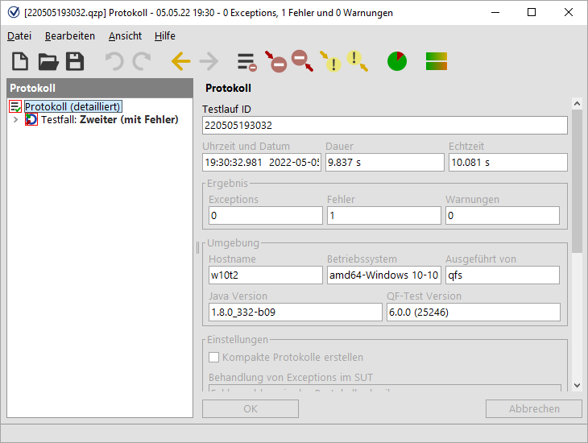
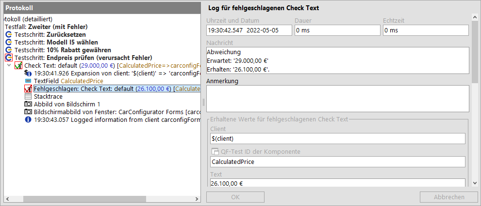
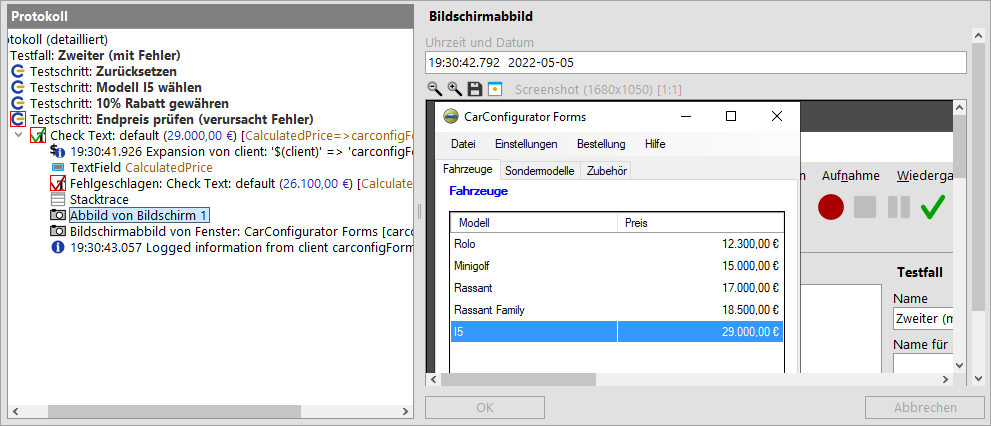

| Version 6.0.3 |
QF-Test protokolliert detaillierte Informationen für jede Testausführung.
oder falls Sie den Dialog bereits geschlossen haben
HinweisDie Protokolle der letzten Testläufe können auch über die unteren Einträge im Menü 'Wiedergabe' aufgerufen werden.
Das Protokoll öffnet sich in einem separaten Fenster und zeigt die protokollierten Aktionen des zweiten Testfalls, den Sie soeben ausgeführt haben:
|
|  | ||
|
| Abbildung 19.12: Protokoll des zweiten Testfalls | ||
Das Protokoll ist in seinem Aufbau ähnlich zu dem der Testsuite. Der Baum links enthält wieder die bekannten Knoten, jedoch dieses Mal in der zeitlichen Abfolge des Testlaufs. Wenn man einen Knoten anwählt, sieht man rechts die Details inklusive Zeitstempel und Ausführungsdauer.
Im Baum links werden Ihnen rote Rahmen um einige Knoten auffallen. Diese zeigen an, dass sich darunter Fehler befinden. Wenn man den rot umrandeten Knoten Ebene für Ebene folgt, erreicht man irgendwann den Fehler.
Alle rot markierten Knoten werden expandiert und der Knoten mit dem eigentlichen Fehler wird selektiert:
|
|  | ||
|
| Abbildung 19.13: Fehlerdiagnose für den zweiten Testfall | ||
Die Fehlermeldung auf der rechten Seite gibt an, dass der erhaltene Wert des Endpreis Feldes nicht dem erwarteten entspricht. Dieser Fehler wurde natürlich mit Absicht eingebaut, um zu zeigen, wie man bei der Analyse vorgehen kann.
Hilfreich bei der Fehleranalyse ist üblicherweise auch der übernächste Protokollknoten Bildschirmabbild. Seine Detailansicht enthält ein vollständiges Abbild des Bildschirms zum Zeitpunkt des Fehlers. Dies ist sehr nützlich, um den Zustand des SUTs zu sehen und daraus eventuell die Fehlerursache ableiten zu können. Die folgende Grafik zeigt den Knoten:
|
|  | ||
|
| Abbildung 19.14: Knoten mit Bildschirmabbild der Fehlersituation | ||
Neben dem Abbild aller Bildschirme speichert QF-Test auch Bilder der einzelnen Fenster des SUT zum Fehlerzeitpunkt. Dies erlaubt Ihnen deren Inhalt zu analysieren, auch wenn diese eigentlich durch andere Fenster oder Dialoge verdeckt sind.
HinweisDie in einem längeren Testlauf im Protokoll gesammelten Informationen
können große Mengen an Arbeitsspeicher verbrauchen. Deshalb ist QF-Test so voreingestellt,
dass es kompakte Protokolle erstellt, wobei nur die für Fehlerdiagnose und
Reportgenerierung wichtigen Informationen erhalten bleiben.
Diese Funktion ist mit
der Option "Kompakte Protokolle erstellen" über »Bearbeiten«-»Optionen...«-»Protokoll«-»Inhalt«
konfigurierbar. Der Typ eines Protokolls wird in seinem Wurzelknoten angezeigt. Auch die
Anzahl der Bildschirmabbilder, die im Protokoll gespeichert werden, ist konfigurierbar.
| Letzte Änderung: 6.9.2022 Copyright © 2002-2022 Quality First Software GmbH |